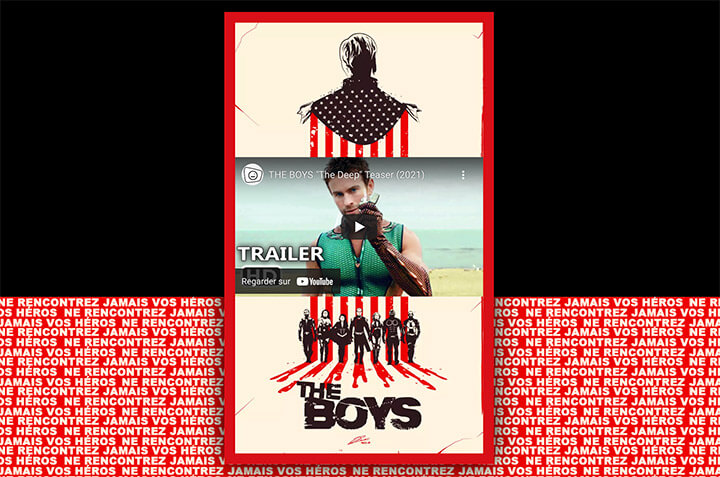

Pour cet exercice, vous devez réaliser une affiche publicitaire ayant pour thème la série The Boys d’Amazon Prime.
Aperçu du résultat 👇

Matériel
Pen de départ
Couleurs 🎨
#d90f17
Médias
Ruban
Entête
Pied de page
Requis
Créez le ruban à l'aide de l'élément .ribbon. Celui-ci doit-être affiché au bas de la page complètement ⬇️, afficher la tuile en pièce jointe comme arrière-plan se répétant à l'infini. Prendre toute la largeur de la page et avoir une hauteur équivalente au quart de sa largeur, peu importe la dimension de la fenêtre.
L'affiche doit mesurer 80% de la largeur de la page, jusqu'à un maximum de 500px. Il doit avoir une marge de 25px vers le haut et le bas et être centré horizontalement dans la page ↔️. Ajoutez-lui une bordure rouge 🔴 de 20px ainsi qu'une ombre noire ⚫️ de 50px, répartie également de chaque côté.
Insérez les images d'entête et de pied de page dans l'affiche 🎆. Faites en sorte qu'elles prennent toute la largeur de celle-ci et qu'aucune ligne noire ne soit visible entre elles.
Insérez le code du iFrame YouTube de la bande-annonce de la série entre les deux images. Pour ce faire, allez sur la page YouTube de la vidéo, sélectionnez les options Partager ➡️ Intégrer. Copiez le code du iFrame fourni à droite.
Par défaut, les iFrames de YouTube ont une largeur et une hauteur fixe ce qui empêchera l'affiche d'être responsive. Retirez donc les attributs width et height du iFrame. Ciblez-le ensuite en CSS afin qu'il prenne toute la largeur de l'affiche et qu'il garde en tout temps son ratio 16-9.
Notes de cours 📚
Aspect-ratio
Créer un élément dont la dimension reste proportionnelle.